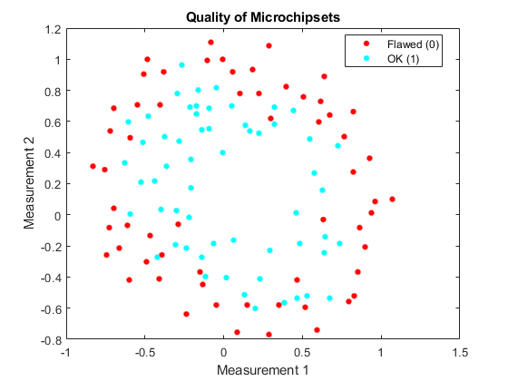
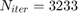
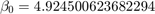
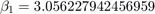
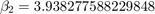
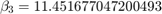
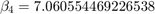
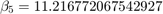
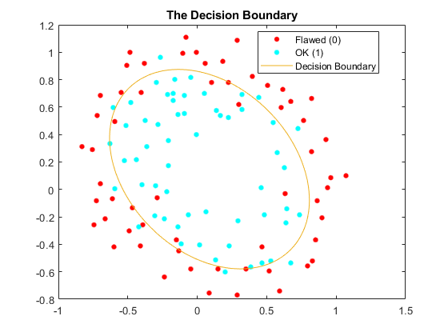
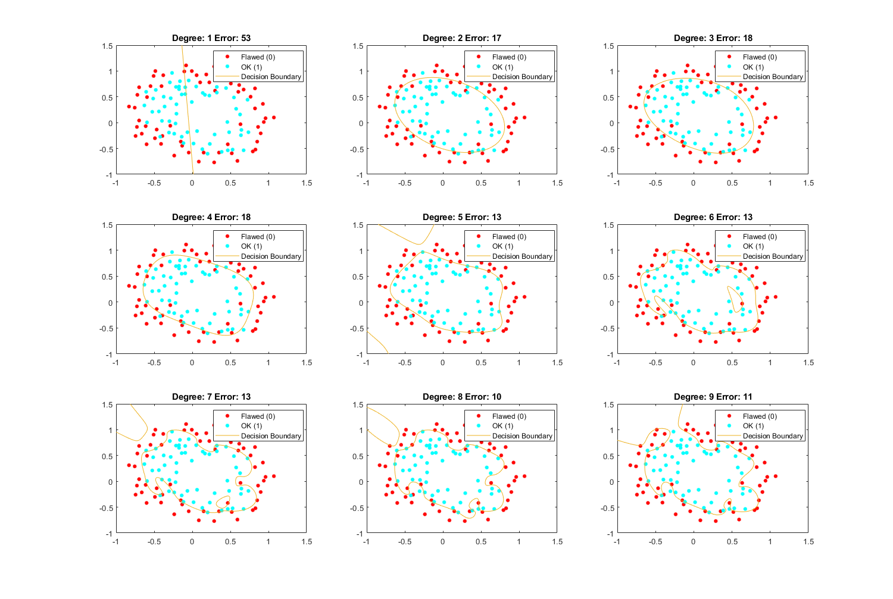

Exercise 6: Nonlinear Logistic Regression
Submitted by Prasannjeet Singh
Contents
Q1. Plotting
% Declaring the degree d = 2; load Data/microchiptests.csv; xMax = max(microchiptests(:,1)); xMin = min(microchiptests(:,1)); yMax = max(microchiptests(:,2)); yMin = min(microchiptests(:,2)); hFig = figure(1); gscatter(microchiptests(:,1), microchiptests(:,2), microchiptests(:,3)); title('Quality of Microchipsets'); xlabel('Measurement 1'); ylabel('Measurement 2'); legend('Flawed (0)', 'OK (1)'); snapnow; close(hFig);
Q2. Non Linear Boundaries
y = microchiptests(:,3); X = ExTwoFunctions.mapFeature(microchiptests(:,1), microchiptests(:,2), d);
Q3. Gradient Descent
a = 1;
[b, costArray, N] = ExTwoFunctions.logisticGradient(X,y,a);
N
b
fprintf(strcat('The final cost is: ', num2str(costArray(end,2))));
N =
3233
b =
4.9245
3.0562
3.9383
-11.4517
-7.0606
-11.2168
The final cost is:0.34846Summarizing:
- 
- 
- 
- 
- 
- 
- 
Now plotting the decision boundary:
warning('off','all'); hFig = figure(2); gscatter(microchiptests(:,1), microchiptests(:,2), microchiptests(:,3)); hold on; f = @(x,y) b' * ExTwoFunctions.mapFeature(x,y,d)'; fimplicit(f,[xMin xMax yMin yMax]); title('The Decision Boundary'); legend('Flawed (0)', 'OK (1)', 'Decision Boundary'); snapnow; close(hFig);
Q4. Using Fminunc
options = optimset('GradObj', 'on', 'MaxIter', 1000,'Display','off'); [n, featCount] = size(X); b = zeros(featCount,1); X(:,1) = []; [beta, final_cost, exitFlag, output] = fminunc(@(beta) (ExTwoFunctions.costFunctionFminunc(beta, X, y)), b, options); fprintf(strcat('Iterations:', 32, int2str(output.iterations),'\r\n')); fprintf(strcat('Alpha:', 32, num2str(output.stepsize),'\r\n')); fprintf(strcat('Final Cost:', 32, num2str(final_cost))); beta
Iterations: 32
Alpha: 0.00031062
Final Cost: 0.34811
beta =
5.1694
3.2475
4.1662
-12.0268
-7.5312
-11.8224
As we can notice, the cost in the implemented function is 0.34846 and the cost in the fminunc() is 0.34811. Therefore, they are almost similar.
Q5. Graph Plot for multiple degrees
hFig = figure(5); set(hFig, 'Position', [0 0 1500 1500]); trainingErrorArray(1,:) = [1 1]; aiccNoReg(1,:) = [1 1]; C = log(2*pi)+1; for i = 1:9 % i X = ExTwoFunctions.mapFeature(microchiptests(:,1), microchiptests(:,2), i); [n, featCount] = size(X); b = zeros(featCount,1); xPlot = X; X(:,1) = []; [beta, final_cost, exitFlag, output] = fminunc(@(beta) (ExTwoFunctions.costFunctionFminunc(beta, X, y)), b, options); subplot(3,3,i); gscatter(microchiptests(:,1), microchiptests(:,2), microchiptests(:,3)); hold on; f = @(x,y) beta' * ExTwoFunctions.mapFeature(x,y,i)'; % fimplicit(f,[xMin xMax yMin yMax]); fimplicit(f); % i curMSE = ExTwoFunctions.costLogistic([ones(n,1) X],y,beta); aiccNoReg(i,:) = [i, n*log(curMSE) + 2*featCount + n*C]; trainingErrorArray(i,:) = [i, sum(((ExTwoFunctions.sigmoid((xPlot) * beta))>= 0.5) ~= y)]; title(strcat('Degree:',32,int2str(i),32,'Error:',32,num2str(trainingErrorArray(i,2)))); legend('Flawed (0)', 'OK (1)', 'Decision Boundary'); end snapnow; close(hFig); save('tea.mat', 'trainingErrorArray', 'aiccNoReg');